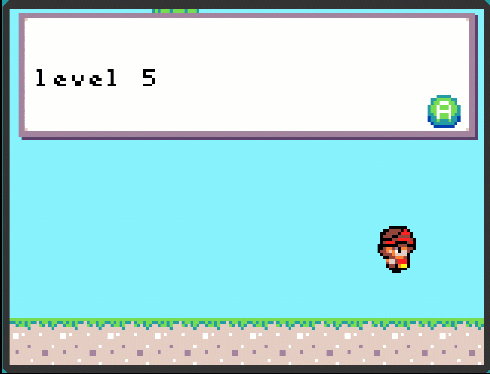
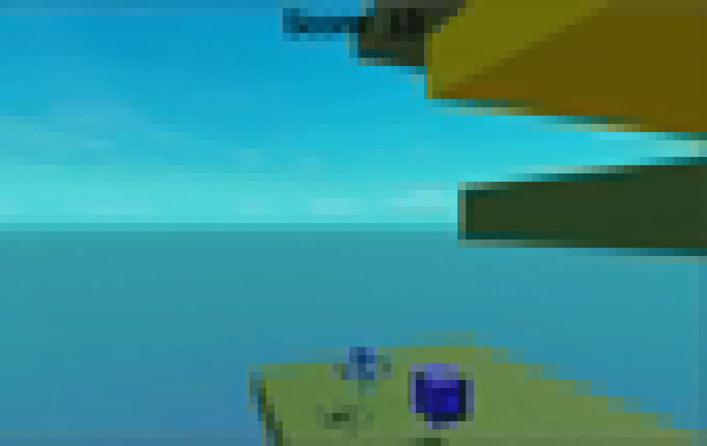
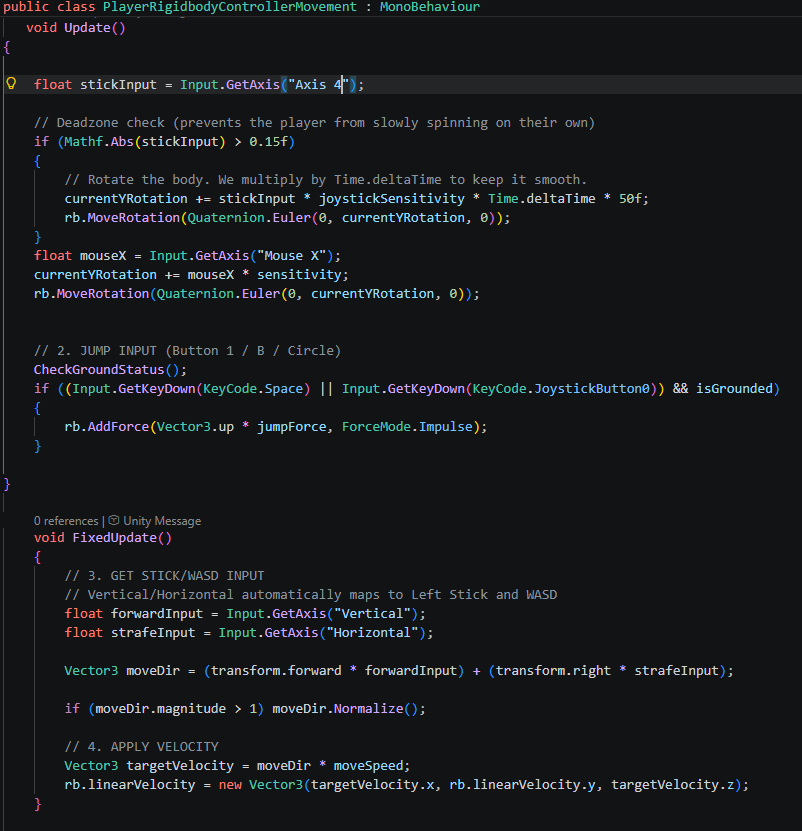
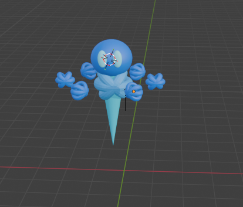

From Scratch to Unity: Building My Most Ambitious Game Yet
Hello my name is Armaan, I am a coder and I am 10 years old!
Previously, I made games using JavaScript, and a game engine called Microsoft Makecode Arcade. This blog post is about how I switched to Unity and the lessons learned along the way.
The game I made is called Elemental Parkour, please check it out sometime.
If you would like to follow me on my coding adventures, then please Join the Journey.
My past games were all 2D
All my past games were 2D. I made The Gamey Game V1 and V2 in pure javascript, Super Armaan World and Blackhole Adventures in Microsoft Makecode Arcade. But I did not want to make 2D games anymore. I thought that 3D games had to be next level and just simply better.

I discovered Unity
Then I discovered Unity. Unity is another game engine, just like Microsoft Makecode Arcade. It is more complex, which means it is harder but I could probably make something better. So I investigated Unity to see what I could make, and I found out that you could make 3D games in Unity! So I began fantasizing about how I would make a super awesome game. This was because all the other games I made felt easy, I could beat them in a day. I wanted to make something hard, something that would take at least a week to complete. But when I got to Unity, I realized that Unity is really complex and I would need practice to complete something that big. So I said “I will make it big next time” and I continued on with a game I could finish in a day.
So I went into Unity and began a 3D project, but it was taking forever to even load! I went to dinner and came back, and Unity had still not loaded! This was when I realized it was time for my dad to upgrade me to a much more powerful computer.

Working with a new set of development tools
For this game I tried to use AI to teach me how to work in the Unity editor. For example, "How to create a prefab in unity”. But it kept telling me things that were wrong because it was getting confused about which version of Unity I was using. So I watched many youtube videos to learn, I watched videos like "Unity for Beginners” and “How to Make Your First Game in Unity 6”. Once I knew what to write I told AI what to type and AI wrote the code following my exact instructions. For example, “use an if loop with == to check if the isGrounded boolean is True.” The thoughts were mine, but AI could type much faster than I could.

I made Elemental Parkour
The game I made in Unity is called Elemental Parkour. Elemental parkour is a 3D platformer with a boss fight, moving platforms, hidden surprises and a deadly jack in the box. If you fail, a whole ecosystem will fall to its doom. When the pressure is on, can you really get to the core in time?

3D modelling with Blender
Sometimes I just can't work with Unity’s built in spheres and cubes. That’s where modeling comes in. Modeling is when you make custom shapes. Unity has its own modeler, ProBuilder. But ProBuilder is really just for basic editing of shapes, and that is not enough for my player’s complex model. I need to make a character! So I switched to Blender. Blender is a 3D modeling software that helps me make my own custom shapes in a proper pro editor. This makes things more complicated, especially with colliders. But it really gives your game a better look.
Better collision tracking with mesh colliders
A collider is like a hitbox for a shape. They allow you to make a shape interact with everything else. But when you make shapes with Blender, the shapes can get really complex. This means your shape may be too abstract for a cube or sphere collider to fit it properly. But everything needs a collider, and that's why mesh colliders are useful. Mesh colliders match the shape of the object perfectly, which helps with accurate hitboxes. This is my model for the player:

For this shape I wanted a mesh collider because it would fit nicely, but the problem was I had added too many mesh colliders. Mesh colliders take up a lot of memory space and CPU time. This means having too many of them causes severe lag, and that was when I realized I had made a big mistake. I had been using mesh colliders for everything and it was causing a lot of lag. So I swapped out all the mesh colliders for sphere, cube, cylinder and capsule colliders, depending on which one matched the shape better. This really helped reduce the lag. I also realized that you do not have to be super complex unless you really need to.
Bending physics with wall grip
Soon I encountered a problem. If you walked into a wall, you would stop falling and get stuck in the wall! I realized this was because my physics material had a high level of friction. In Unity a physics material specifies how the object reacts to friction. My object used the default physics. The default physics material had high friction, so the player would get stuck. To stop this, I made a new material and called it slippery. I then set the friction to zero to stop the player from getting stuck.

Third Person View using Cinemachine
I needed to make the camera follow the player, so I decided to use Cinemachine. Cinemachine is a package that helps move the camera with delay and organic movements. I wanted the camera to be stuck behind the player's back because I thought the user needed to see what was happening. It was fine, but I soon realized that the camera movement felt robotic. So I changed it to have a delay and then it felt more organic. You might not realize it, but things like camera delay, sprites that do nothing but just stand there, and screen shake are sometimes used to add a natural feeling to the game.
Understanding complications with high-poly
In Blender there is a thing called poly, low-poly and high-poly. Poly is how many polygons are in your shape. Poly can also mean how complex your shape is. The more poly, the more memory space and CPU time it takes up. This is where I had the same problem as with Mesh colliders, I made a complex castle model and it lagged a lot. I then changed it to a less high -poly model and I learned the same lesson as in Mesh colliders: “You do not have to be super complex unless you really need to.”
Connecting a game controller
I had basically finished my game, but there was one thing left to do. My frends would playtest the game. They requested I add gamepad support because that was how they were used to playing other games. I added the input and it worked perfectly, but when I tested on the web using a WebGL build nothing worked! Turns out that gamepads use different controls in Unity editor and on the web! So I worked on getting everything to match up on the web before declaring my game finished!
Is 3D really better than 2D?
When I started I stated “3D games had to be next level and just simply better.” While making my game I realized that this was not the case. 3D is better for games like FPS, but 2D is better for games like platformers. I realized that none of them are better but it really comes down to choosing the right tool for the job.
Conclusion
In conclusion, I really think making this game helped me understand how to use Unity. I think knowledge of a game engine that actual games are built on might be helpful, and maybe I will make a bigger game next time!
If you would like to follow me on my coding adventures, then join the journey!